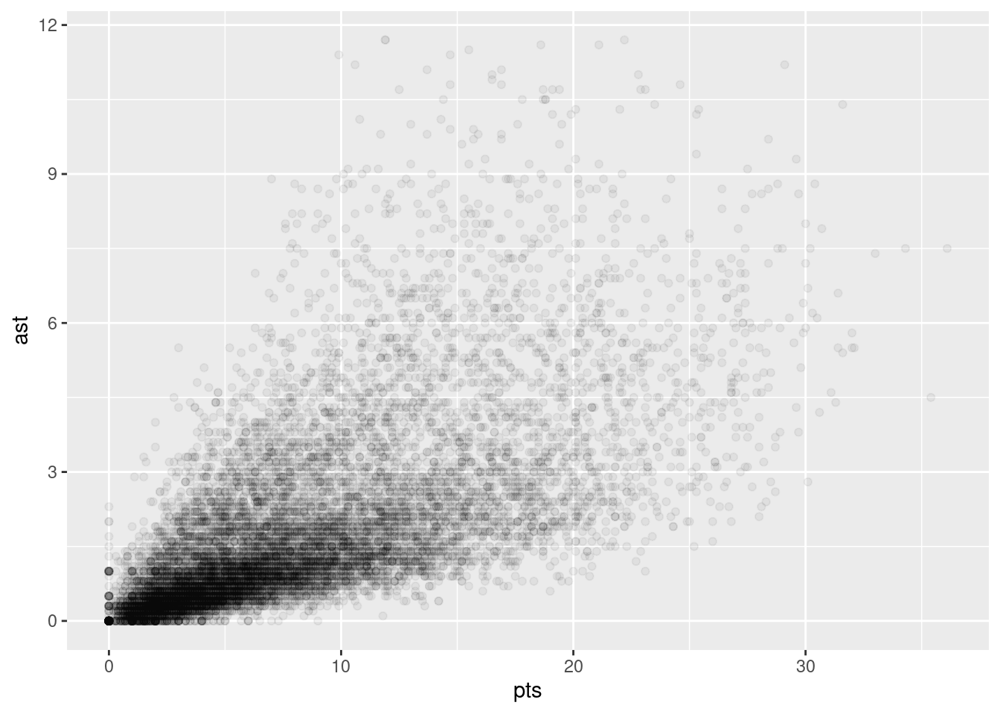
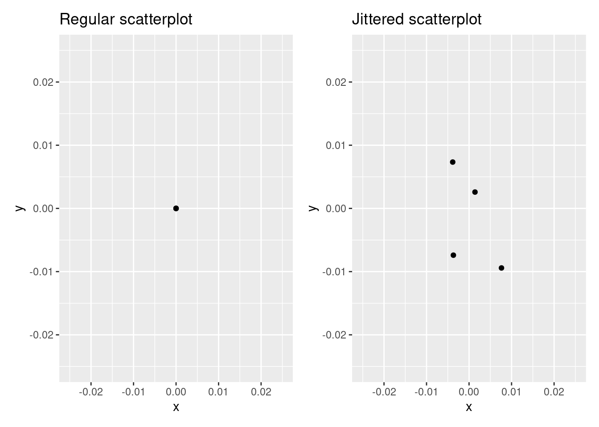
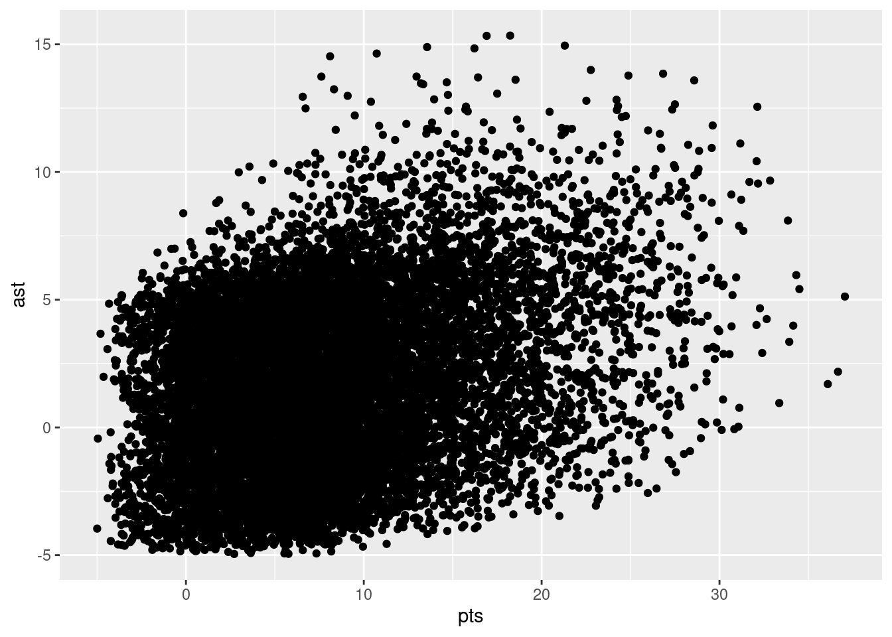
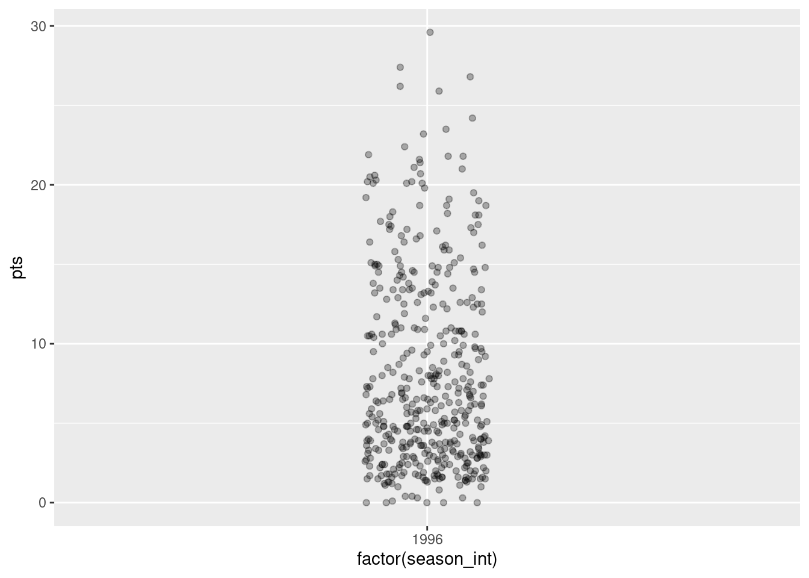
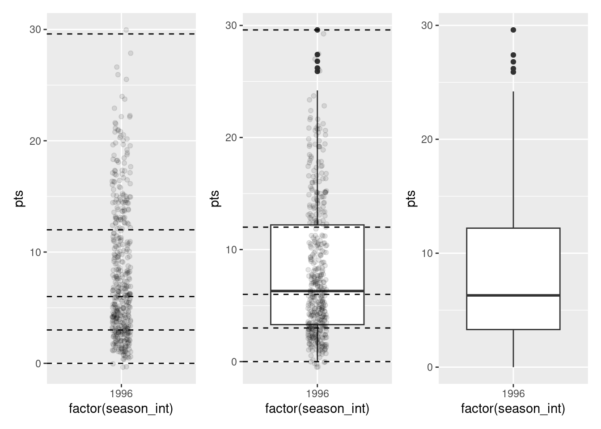
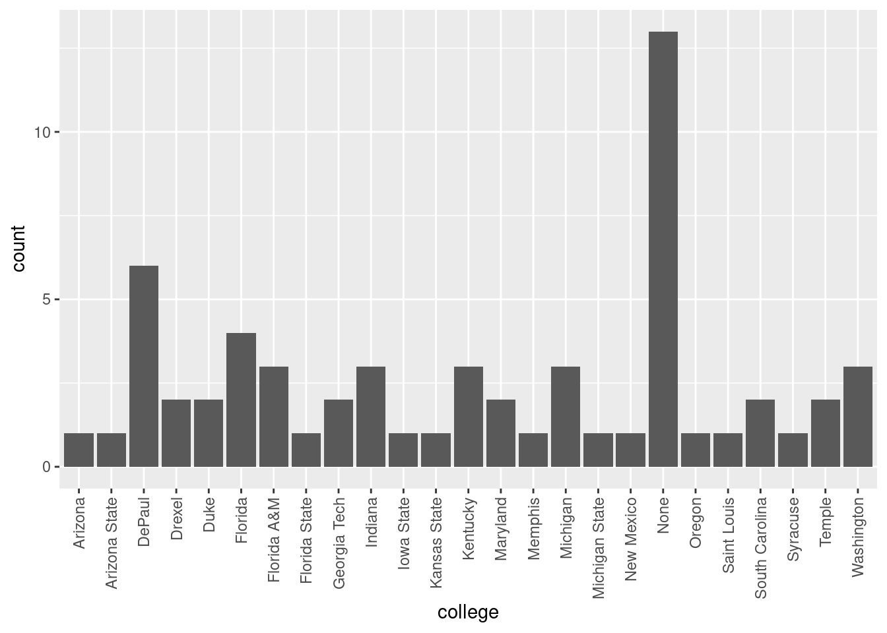

nba <- read_csv("./data/nba_all_seasons.csv", na = c("Undrafted"))7 Visualizing Data
We continue the development of your data analysis toolbox with data visualization. By visualizing data, we gain valuable insights we couldn’t easily obtain from just looking at the raw data values or even the summaries we generated in Chapter 6. To visualizer our data, we’ll be using the ggplot2 package, as it provides an easy way to customize your plots. ggplot2 is rooted in the data visualization theory known as the grammar of graphics (Wilkinson 2012), developed by Leland Wilkinson.
At their most basic, graphics/plots/charts (we use these terms interchangeably in this book) provide a nice way to explore the patterns in data, such as the distribution of individual variables and relationships between groups of variables. Graphics are designed to emphasize the findings and insights you want your audience to understand. This does, however, require a balancing act. On the one hand, you want to highlight as many interesting findings as possible. On the other hand, you don’t want to include so much information that it overwhelms your audience.
As we will see, plots also help us to identify patterns in our data. We’ll see that a common extension of these ideas is to compare the distribution of one numerical variable, such as what are the center and spread of the values, as we go across the levels of a different categorical variable.
7.1 The grammar of graphics
We start with a discussion of a theoretical framework for data visualization known as “the grammar of graphics.” This framework serves as the foundation for the ggplot2 package which we’ll use extensively in this chapter. In Chapter 6, we saw how dplyr provides a “grammar” of data manipulation, a grammar which is made up of several “verbs” (functions like filter and mutate). Similar to dplyr’s grammar of data manipulation, ggplto2 provides a a grammar of graphics that defines a set of rules for constructing statistical graphics by combining different types of layers. This grammar was created by Leland Wilkinson (Wilkinson 2012) and has been implemented in a variety of data visualization software platforms like R, but also Plotly and Tableau.
7.1.1 Components of the grammar
In short, the grammar tells us that:
A statistical graphic is a
mappingofdatavariables toaesthetic attributes ofgeometric objects.
Specifically, we can break a graphic into the following three essential components:
data: the dataset containing the variables of interest.geom: the geometric object in question. This refers to the type of object we can observe in a plot. For example: points, lines, and bars.aes: aesthetic attributes of the geometric object. For example, x/y position, color, shape, and size. Aesthetic attributes are mapped to variables in the data set.
You might be wondering why we wrote the terms data, geom, and aes in a computer code type font. We’ll see very shortly that we’ll specify the elements of the grammar in R using these terms. However, let’s first break down the grammar with an example.
7.1.2 An initial example
Let’s take another look at our nba data set, this time via the grammar of graphics. Let’s specifically take a look at how things have changed over the years. As always, we need to load the data we downloaded back in Section 3.2. Run the following:
We need to do a bit of work before we can use season as a measure of time. This is because the season column is currently stored as a character vector, with values such as “2000-01” and “2011-12”. So we need two things: these character vectors need to be trimmed so that we retain only the first 4 characters in each vector and we then need to convert these character vectors to their corresponding numeric values. We’ll do that using the stringr package, yet another package that is part of the tidyverse.
nba <- nba %>%
# select first 4 characters of `season`
mutate(season_int = substr(nba$season, start=1, stop=4)) %>%
# convert to integer
mutate(season_int = as.integer(season_int))Now that we have time represented as a numeric column in our data set, we can use it to plot some data to visualize.
`summarise()` has grouped output by 'team_abbreviation'. You can override using
the `.groups` argument.Let’s view this plot through the grammar of graphics. First, we have actually used two type of geometric object here: a line object and a point object. The point object provides the small circular data points. The line object provides the line segments connecting the points.
- The
datavariable season_int gets mapped to thex-positionaesthetic of the lines and the points. - The
datavariable pts gets mapped to they-positionaesthetic of the lines and the points. - The
datavariable team gets mapped to thecoloraesthetic of the lines and the points. - The
datavariable ast gets mapped to thesizeaesthetic of the points.
That being said, this is just an example. Plots can specify points, lines, bars, and a variety of other geometric objects.
Let’s summarize the three essential components of the grammar.
# A tibble: 7 × 3
geom aes `data variable`
<chr> <chr> <chr>
1 line x season_int
2 line y pts
3 line color team
4 point x season_int
5 point y pts
6 point color team
7 point size ast 7.1.3 Other components
There are other components of the grammar of graphics we can control as well. As you start to delve deeper into the grammar of graphics, you’ll start to encounter these topics more frequently. In this book, we’ll keep things simple and only work with these two additional components:
faceting breaks up a plot into several plots split by the values of another variablepositionadjustments for barplots
Other more complex components like scales and coordinate systems are left for a more advanced text such as R for Data Science. Generally speaking, the grammar of graphics allows for a high degree of customization of plots and also a consistent framework for easily updating and modifying them.
7.1.4 ggplot2 package
In this book, we will use the ggplot2 package for data visualization, which is an implementation of the grammar of graphics for R. As we noted earlier, a lot of the previous section was written in a computer code type font. This is because the various components of the grammar of graphics are specified in the ggplot() function included in the ggplot2 package. For the purposes of this book, we’ll always provide the ggplot() function with the following arguments (i.e., inputs) at a minimum:
- The data frame where the variables exist: the
dataargument. - The mapping of the variables to aesthetic attributes: the
mappingargument which specifies theaesthetic attributes involved.
After we’ve specified these components, we then add layers to the plot using the + sign. The most essential layer to add to a plot is the layer that specifies which type of geometric object we want the plot to involve: points, lines, bars, and others. Other layers we can add to a plot include the plot title, axes labels, visual themes for the plots, and facets (which we’ll see in Section 7.6).
Let’s now put the theory of the grammar of graphics into practice.
7.2 Five named graphs - the 5NG
In order to keep things simple in this book, we will only focus on five different types of graphics, each with a commonly given name. We term these “five named graphs” or in abbreviated form, the 5NG:
- scatterplots
- linegraphs
- histograms
- boxplots
- barplots
We’ll also present some variations of these plots, but with this basic repertoire of five graphics in your toolbox, you can visualize a wide array of different variable types. Note that certain plots are only appropriate for categorical variables, while others are only appropriate for numerical variables.
7.3 5NG#1: Scatterplots
The simplest of the 5NG are scatterplots. They allow you to visualize the relationship between two numerical variables. While you may already be familiar with scatterplots, let’s view them through the lens of the grammar of graphics. Specifically, we will visualize the relationship between the following two numerical variables in the nba data frame:
pts: average points per game each player scoredast: average number of assists per game each player made
7.3.1 Scatterplots via geom_point
Let’s now go over the code that will create the desired scatterplot, while keeping in mind the grammar of graphics framework we introduced above. Let’s take a look at the code and break it down piece-by-piece.
ggplot(data = nba, mapping = aes(x = pts, y = ast)) +
geom_point()Within the ggplot() function, we specify two of the components of the grammar of graphics as arguments (i.e., inputs):
- The
dataas thenbadata frame viadata = nba. - The
aestheticmappingby settingmapping = aes(x = pts, y = ast). Specifically, the variableptsmaps to thexposition aesthetic, whereas the variableastmaps to theyposition.
We then add a layer to the ggplot() function call using the + sign. The added layer in question specifies the third component of the grammar: the geometric object. In this case, the geometric object is set to be points by specifying geom_point(). After running these two lines of code in your console, you’ll notice two outputs: a warning message and this graphic.
Let’s first unpack the graphic in Figure 7.1. Observe that a positive relationship exists between pts and ast: as the number of points increases, the number of assists also increases. Observe also the large mass of points clustered near (0, 0), the point indicating players have no points and no assists (e.g., what would be expected from a player that doesn’t play very much).
Before we continue, let’s make a few more observations about this code that created the scatterplot. Note that the + sign comes at the end of lines, and not at the beginning. You’ll get an error in R if you put it at the beginning of a line. When adding layers to a plot, you are encouraged to start a new line after the + (by pressing the Return/Enter button on your keyboard) so that the code for each layer is on a new line. As we add more and more layers to plots, you’ll see this will greatly improve the legibility of your code.
To stress the importance of adding the layer specifying the geometric object, consider Figure 7.2 where no layers are added. Because the geometric object was not specified, we have a blank plot which is not very useful!
ggplot(data = nba, mapping = aes(x = pts, y = ast))7.3.2 Overplotting
The large mass of points near (0, 0) in Figure can cause some confusion since it is hard to tell the true number of points that are actually in this lower corner. This is the result of a phenomenon called overplotting. As one may guess, this corresponds to points being plotted on top of each other over and over again. When overplotting occurs, it is difficult to know the number of points being plotted. There are two methods to address the issue of overplotting. Either by
- Adjusting the transparency of the points or
- Adding a little random “jitter”, or random “nudges”, to each of the points.
Method 1: Changing the transparency
The first way of addressing overplotting is to change the transparency/opacity of the points by setting the alpha argument in geom_point(). We can change the alpha argument to be any value between 0 and 1, where 0 sets the points to be 100% transparent and 1 sets the points to be 100% opaque. By default, alpha is set to 1. In other words, if we don’t explicitly set an alpha value, R will use alpha = 1.
Note how the following code is identical to the code in Section @ref(scatterplots) that created the scatterplot with overplotting, but with alpha = 0.05 added to the geom_point() function:
ggplot(data = nba, mapping = aes(x = pts, y = ast)) +
geom_point(alpha = 0.05)
The key feature to note in Figure 7.3 is that the transparency of the points is cumulative: areas with a high-degree of overplotting are darker, whereas areas with a lower degree are less dark. Note furthermore that there is no aes() surrounding alpha = 0.05. This is because we are not mapping a variable to an aesthetic attribute, but rather merely changing the default setting of alpha. In fact, you’ll receive an error if you try to change the second line to read geom_point(aes(alpha = 0.05)).
Method 2: Jittering the points
The second way of addressing overplotting is by jittering all the points. This means giving each point a small “nudge” in a random direction. You can think of “jittering” as shaking the points around a bit on the plot. Let’s illustrate using a simple example first. Say we have a data frame with 4 identical rows of x and y values: (0,0), (0,0), (0,0), and (0,0). In Figure 7.4, we present both the regular scatterplot of these 4 points (on the left) and its jittered counterpart (on the right).

In the left scatterplot, observe that the 4 points are superimposed on top of each other. While we know there are 4 values being plotted, this fact might not be apparent to others. In the right scatterplot, the points are jittered and it is now plainly evident that this plot involves four points since each point is given a random “nudge.”
Keep in mind, however, that jittering is strictly a visualization tool; even after creating a jittered scatterplot, the original values saved in the data frame remain unchanged.
To create a jittered scatterplot, instead of using geom_point(), we use geom_jitter(). Observe how the following code is very similar to the code that created Figure 7.1, but with geom_point() replaced with geom_jitter().

In order to specify how much jitter to add, we adjusted the width and height arguments to geom_jitter(). This corresponds to how hard you’d like to shake the plot in horizontal x-axis units and vertical y-axis units, respectively. In this case, both axes are in counts (number of points, number of assists). How much jitter should we add using the width and height arguments? On the one hand, it is important to add just enough jitter to break any overlap in points, but on the other hand, not so much that we completely alter the original pattern in points.
As can be seen in the resulting Figure 7.5, in this case jittering doesn’t really provide much new insight. In this particular case, it can be argued that changing the transparency of the points by setting alpha proved more effective. When would it be better to use a jittered scatterplot? When would it be better to alter the points’ transparency? There is no single right answer that applies to all situations. You need to make a subjective choice and own that choice. At the very least when confronted with overplotting, however, we suggest you make both types of plots and see which one better emphasizes the point you are trying to make.
7.3.3 Summary
Scatterplots display the relationship between two numerical variables. They are among the most commonly used plots because they can provide an immediate way to see the trend in one numerical variable versus another. However, if you try to create a scatterplot where either one of the two variables is not numerical, you might get strange results. Be careful!
With medium to large datasets, you may need to play around with the different modifications to scatterplots we saw such as changing the transparency/opacity of the points or by jittering the points. This tweaking is often a fun part of data visualization, since you’ll have the chance to see different relationships emerge as you tinker with your plots.
7.4 5NG#2: Linegraphs
The next of the five named graphs are linegraphs. Linegraphs show the relationship between two numerical variables when the variable on the x-axis is ordinal; there is an inherent ordering to the variable.
The most common examples of linegraphs have some notion of time on the x-axis: hours, days, weeks, years, etc. Since time is naturally ordinal, we connect consecutive observations of the variable on the y-axis with a line. Linegraphs that have some notion of time on the x-axis are also called time series plots.
7.4.1 Linegraphs via geom_line
Let’s a linegraph to visualize a single NBA player’s number of points scored across seasons. To do so, we’ll use geom_line(), instead of using geom_point() as we did for the scatterplots above:
ggplot(
data = nba %>%
filter(player_name == "Stephen Curry"),
mapping = aes(x = season_int, y = pts)
) +
geom_line()Let’s break down this code piece-by-piece in terms of the grammar of graphics. Within the ggplot() function call, we specify two of the components of the grammar of graphics as arguments:
- The
data. Here we have provided a filtered version of ournbadata set, selecting only those row whereplayer_name=="Stephen Curry". - The
aestheticmappingby settingmapping = aes(x = season_int, y = pts). Specifically, the variableseason_intmaps to thexposition aesthetic, whereas the variableptsmaps to theyposition aesthetic.
We add a layer to the ggplot() function call using the + sign. The layer in question specifies the third component of the grammar: the geometric object in question. In this case, the geometric object is a line set by specifying geom_line().
7.4.2 Summary
Linegraphs, just like scatterplots, display the relationship between two numerical variables. However, it is preferred to use linegraphs over scatterplots when the variable on the x-axis (i.e., the explanatory variable) has an inherent ordering, such as some notion of time.
7.5 5NG#3: Histograms
Let’s consider the pts variable in the nba data frame once again, but unlike with the linegraphs in Section 7.4, let’s say we don’t care about its relationship with time, but rather we only care about how the values of pts distribute. In other words:
- What are the smallest and largest values?
- What is the “center” or “most typical” value?
- How do the values spread out?
- What are frequent and infrequent values?
One way to visualize this distribution of this single variable pts is to plot them on a horizontal line as we do in Figure 7.6:
This gives us a bit of an idea of how the values of pts are distributed: note that values range from zero to approximately 20. In addition, there appear to be more values falling between approximately 3 and 10 than there are values falling above this range. However, because of the high degree of overplotting in the points, it’s hard to get a sense of exactly how many values are between 5 and 10.
What is commonly produced instead of Figure 7.6 is known as a histogram. A histogram is a plot that visualizes the distribution of a numerical value as follows:
- We first cut up the x-axis into a series of bins, where each bin represents a range of values.
- For each bin, we count the number of observations that fall in the range corresponding to that bin.
- Then for each bin, we draw a bar whose height marks the corresponding count.
Let’s drill-down on an example of a histogram, shown in Figure 7.7.
Let’s focus only on values between 10 points and 20 points for now. Observe that there are five bins of equal width between 10 points and 20 points. Thus we have five bins of width 2 points each: one bin for the 10-12 range, another bin for the 13-14 range, etc.
- The bin for the 10-12 range has a height of around 150. In other words, around 150 players scored a season average of between 10 and 20 points.
- The bin for the 13-14 range has a height of around 100. In other words, around 100. players scored a season average of between 13 and 14 points.
- The bin for the 15-16 range has a height of around 50. In other words, around 50 players scored a season average of between 15 and 16 points.
- And so on…
7.5.1 Histograms via geom_histogram
Let’s now present the ggplot() code to plot your first histogram! Unlike with scatterplots and linegraphs, there is now only one variable being mapped in aes(): the single numerical variable pts. The y-aesthetic of a histogram, the count of the observations in each bin, gets computed for you automatically. Furthermore, the geometric object layer is now a geom_histogram(). After running the following code, you’ll see the histogram in Figure 7.8 as well as a warning message. We’ll discuss the warning message first.
ggplot(data = nba %>%
group_by(player_name) %>%
summarize(pts = mean(pts)),
mapping = aes(x = pts)) +
geom_histogram()`stat_bin()` using `bins = 30`. Pick better value with `binwidth`.
The warning is telling us that the histogram was constructed using bins = 30 for 30 equally spaced bins. This is known the default value for this argument (Section 2.4.1). We’ll see in the next section how to change the number of bins to another value than the default.
Now let’s unpack the resulting histogram in Figure 7.9. Observe that values greater than 20 are rather rare. However, because of the large number of bins, it’s hard to get a sense for which range of temperatures is spanned by each bin; everything is one giant amorphous blob. So let’s add white vertical borders demarcating the bins by adding a color = "white" argument to geom_histogram() and ignore the warning about setting the number of bins to a better value:
`stat_bin()` using `bins = 30`. Pick better value with `binwidth`.We now have an easier time associating ranges of temperatures to each of the bins in Figure 7.10. We can also vary the color of the bars by setting the fill argument. For example, you can set the bin colors to be “blue steel” by setting fill = "steelblue":
ggplot(data = nba %>%
group_by(player_name) %>%
summarize(pts = mean(pts)),
mapping = aes(x = pts)) +
geom_histogram(color = "white", fill = "steelblue")`stat_bin()` using `bins = 30`. Pick better value with `binwidth`.If you’re curious, run colors() to see all 657 possible choice of colors in R!
7.5.2 Adjusting the bins
Observe in Figure 7.10 that in the 10-20 range there appear to be roughly 111 bins. Thus each bin has width 20-10 divided by 11, or 0.91 points, which is not a very easily interpretable range to work with. Let’s improve this by adjusting the number of bins in our histogram in one of two ways:
- By adjusting the number of bins via the
binsargument togeom_histogram(). - By adjusting the width of the bins via the
binwidthargument togeom_histogram().
Using the first method, we have the power to specify how many bins we would like to cut the x-axis up in. As mentioned in the previous section, the default number of bins is 30. We can override this default, to say 25 bins, as follows:
ggplot(data = nba %>%
group_by(player_name) %>%
summarize(pts = mean(pts)),
mapping = aes(x = pts)) +
geom_histogram(bins = 25, color = "white")Using the second method, instead of specifying the number of bins, we specify the width of the bins by using the binwidth argument in the geom_histogram() layer. For example, let’s set the width of each bin to be 5 points.
ggplot(data = nba %>%
group_by(player_name) %>%
summarize(pts = mean(pts)),
mapping = aes(x = pts)) +
geom_histogram(binwidth = 5, color = "white")We compare both resulting histograms side-by-side in Figure 7.11.
7.5.3 Summary
Histograms, unlike scatterplots and linegraphs, present information on only a single numerical variable. Specifically, they are visualizations of the distribution of the numerical variable in question.
7.6 Facets
Before continuing with the next of the 5NG, let’s briefly introduce a new concept called faceting. Faceting is used when we’d like to split a particular visualization by the values of another variable. This will create multiple copies of the same type of plot with matching x and y axes, but whose content will differ.
For example, suppose we were interested in looking at how the histogram of players’ average points per game changed across seasons. We could “split” this histogram so that we had a separate histogram of pts for each of several values of season_int. We do this by adding facet_wrap(~ season_int) layer. Note the ~ is a “tilde” and can generally be found on the key next to the “1” key on US keyboards. The tilde is required and you’ll receive the error Error in as.quoted(facets) : object 'season_int' not found if you don’t include it here.
ggplot(
data = nba %>%
group_by(player_name, season_int) %>%
summarize(pts = mean(pts), season_int=first(season_int)),
mapping = aes(x = pts)
) +
geom_histogram(binwidth = 5, color = "white") +
facet_wrap( ~ season_int)`summarise()` has grouped output by 'player_name'. You can override using the
`.groups` argument.We can also specify the number of rows and columns in the grid by using the nrow and ncol arguments inside of facet_wrap(). For example, say we would like our faceted histogram to have 4 rows instead of 3. We simply add an nrow = 4 argument to facet_wrap(~ season_int).
ggplot(
data = nba %>%
group_by(player_name, season_int) %>%
summarize(pts = mean(pts), season_int=first(season_int)),
mapping = aes(x = pts)
) +
geom_histogram(binwidth = 5, color = "white") +
facet_wrap( ~ season_int, nrow = 4)`summarise()` has grouped output by 'player_name'. You can override using the
`.groups` argument.7.7 5NG#4: Boxplots
Though faceted histograms are one type of visualization used to compare the distribution of a numerical variable split by the values of another variable, another type of visualization that achieves a similar goal is a side-by-side boxplot. A boxplot is constructed from the information provided in the five-number summary of a numerical variable.
Let’s again consider the distribution of points. For now, let’s confine ourselves to the 1996 season to keep things simple.
base_plot <- nba %>%
filter(season_int %in% c(1996)) %>%
ggplot(mapping = aes(x = factor(season_int), y=pts))
base_plot + geom_jitter(width = 0.1, height = 0, alpha = 0.3)
These observations have the following five-number summary:
- Minimum: 0
- First quartile (25th percentile): 3 points
- Median (second quartile, 50th percentile): 6 points
- Third quartile (75th percentile): 12 points
- Maximum: 29.6
In the leftmost plot of Figure 7.15, let’s mark these 5 values with dashed horizontal lines on top of the actual data points. In the middle plot of Figure 7.15 let’s add the boxplot. In the rightmost plot of Figure 7.15, let’s remove the points and the dashed horizontal lines for clarity’s sake.

What the boxplot does is visually summarize the points by cutting them into quartiles at the dashed lines, where each quartile contains four equally-size groups of observations. Thus
- 25% of points fall below the bottom edge of the box, which is the first quartile of 3 points. In other words, 25% of observations were below 3 points.
- 25% of points fall between the bottom edge of the box and the solid middle line, which is the median of 6 points. Thus, 25% of observations were between 3 points and 6 points and 50% of observations were below 6 points.
- 25% of points fall between the solid middle line and the top edge of the box, which is the third quartile of 12 points. It follows that 25% of observations were between 6 points and 12 points and 75% of observations were below 12 points.
- 25% of points fall above the top edge of the box. In other words, 25% of observations were above 12 points.
- The middle 50% of points lie within the interquartile range (IQR) between the first and third quartile. Thus, the IQR for this example is 3 - 12 = -9 point. The interquartile range is one measure of a numerical variable’s spread.
Furthermore, in the rightmost plot of Figure 7.15, we see the whiskers of the boxplot. The whiskers stick out from either end of the box all the way to the minimum and maximum observations of 0 and 29.6 points, respectively. However, the whiskers don’t always extend to the smallest and largest observed values as they do here. They in fact extend no more than 1.5 \(\times\) the interquartile range from either end of the box. In this case, we see a small number of observations that lie more than 1.5 \(\times\) -9 points = -13.5 points the top of the box. These observations are are called outliers.
7.7.1 Boxplots via geom_boxplot
Let’s now create a side-by-side boxplot of players’ average points per game split by the different seasons as we did previously with the faceted histograms. We do this by mapping the season_int variable to the x-position aesthetic, the pts variable to the y-position aesthetic, and by adding a geom_boxplot() layer:
ggplot(data = nba, mapping = aes(x = season_int, y = pts)) +
geom_boxplot()Warning: Continuous x aesthetic
ℹ did you forget `aes(group = ...)`?Observe in Figure 7.16 that this plot does not provide information about points separated by season. The warning message clues us in as to why. It is telling us that we have a “continuous”, or numerical variable, on the x-position aesthetic. Boxplots, however, require a categorical variable to be mapped to the x-position aesthetic.
We can convert the numerical variable season_int into a factor categorical variable by using the factor() function. So after applying factor(season_int), season_int goes from having numerical values just the 1995, 1996, etc. to having an associated ordering. With this ordering, ggplot() now knows how to work with this variable to produce the needed plot.
ggplot(data = nba, mapping = aes(x = factor(season_int), y = pts)) +
geom_boxplot()The resulting Figure 7.17 shows 26 separate “box and whiskers” plots similar to the rightmost plot of Figure 7.15 of only data from 1996. Thus the different boxplots are shown “side-by-side.”
- The “box” portions of the visualization represent the 1st quartile, the median (the 2nd quartile), and the 3rd quartile.
- The height of each box (the value of the 3rd quartile minus the value of the 1st quartile) is the interquartile range (IQR). It is a measure of the spread of the middle 50% of values, with longer boxes indicating more variability.
- The “whisker” portions of these plots extend out from the bottoms and tops of the boxes and represent points less than the 25th percentile and greater than the 75th percentiles, respectively. They’re set to extend out no more than \(1.5 \times IQR\) units away from either end of the boxes. We say “no more than” because the ends of the whiskers have to correspond to observed points per game averages The length of these whiskers show how the data outside the middle 50% of values vary, with longer whiskers indicating more variability.
- The dots representing values falling outside the whiskers are called outliers. These can be thought of as potentially anomalous (“out-of-the-ordinary”) values.
It is important to keep in mind that the definition of an outlier is somewhat arbitrary and not absolute. In this case, they are defined by the length of the whiskers, which are no more than \(1.5 \times IQR\) units long for each boxplot. Looking at this side-by-side plot we can easily compare scorring distributions across seasons by drawing imaginary horizontal lines across the plot. Furthermore, the heights of the boxes as quantified by the interquartile ranges are informative too; they tell us about variability, or spread, of the different players’ averages recorded in a given season.
7.7.2 Summary
Side-by-side boxplots provide us with a way to compare the distribution of a numerical variable across multiple values of another variable. One can see where the median falls across the different groups by comparing the solid lines in the center of the boxes.
To study the spread of a numerical variable within one of the boxes, look at both the length of the box and also how far the whiskers extend from either end of the box. Outliers are even more easily identified when looking at a boxplot than when looking at a histogram as they are marked with distinct points.
7.8 5NG#5: Barplots
Both histograms and boxplots are tools to visualize the distribution of numerical variables. Another commonly desired task is to visualize the distribution of a categorical variable. This is a simpler task, as we are simply counting different categories within a categorical variable, also known as the levels of the categorical variable. Often the best way to visualize these different counts, also known as frequencies, is with barplots (also called barcharts).
One complication, however, is how your data is represented. Is the categorical variable of interest “pre-counted” or not? For example, run the following code that manually creates two data frames representing a collection of fruit: 3 apples and 2 oranges.
fruits <- tibble(
fruit = c("apple", "apple", "orange", "apple", "orange")
)
fruits_counted <- tibble(
fruit = c("apple", "orange"),
number = c(3, 2)
)We see both the fruits and fruits_counted data frames represent the same collection of fruit. Whereas fruits just lists the fruit individually…
# A tibble: 5 × 1
fruit
<chr>
1 apple
2 apple
3 orange
4 apple
5 orange… fruits_counted has a variable count which represent the “pre-counted” values of each fruit.
# A tibble: 2 × 2
fruit number
<chr> <dbl>
1 apple 3
2 orange 2Depending on how your categorical data is represented, you’ll need to add a different geometric layer type to your ggplot() to create a barplot, as we now explore.
7.8.1 Barplots via geom_bar or geom_col
Let’s generate barplots using these two different representations of the same basket of fruit: 3 apples and 2 oranges. Using the fruits data frame where all 5 fruits are listed individually in 5 rows, we map the fruit variable to the x-position aesthetic and add a geom_bar() layer:
ggplot(data = fruits, mapping = aes(x = fruit)) +
geom_bar()However, using the fruits_counted data frame where the fruits have been “pre-counted”, we once again map the fruit variable to the x-position aesthetic, but here we also map the count variable to the y-position aesthetic, and add a geom_col() layer instead.
ggplot(data = fruits_counted, mapping = aes(x = fruit, y = number)) +
geom_col()Compare the barplots in Figures Figure 7.18 and Figure 7.19. They are identical because they reflect counts of the same five fruits. However, depending on how our categorical data is represented, either “pre-counted” or not, we must add a different geom layer. When the categorical variable whose distribution you want to visualize
- Is not pre-counted in your data frame, we use
geom_bar(). - Is pre-counted in your data frame, we use
geom_col()with the y-position aesthetic mapped to the variable that has the counts.
Let’s now go back to the nba data frame and visualize the distribution of the categorical variable college. Specifically, we’ll visualize the number of players who graduated from different colleges. We’ll focus on the New York Knicks (team_abbreviation==NYK) and data from the 2006-2009 seasons.
Recall from Chapter 6, you saw that each row in the nba data set corresponds to a player in a given year In other words, the nba data frame is more like the fruits data frame than the fruits_counted data frame because the numbers of players from each college have not been pre-counted. Thus we should use geom_bar() instead of geom_col() to create a barplot. Much like a geom_histogram(), there is only one variable in the aes() aesthetic mapping: the variable college gets mapped to the x-position. As a difference though, histograms typically have bars that touch whereas bar graphs typically have space between the bars.
nba %>%
group_by(player_name, college) %>%
filter(team_abbreviation %in% c("NYK"),
season_int < 2010,
season_int > 2005) %>%
ggplot(mapping = aes(x = college)) +
geom_bar() +
theme(axis.text.x = element_text(angle = 90))
Observe in Figure 7.20 that there are many Knicks players who either did not attend any college (“None”), attended Arizona State, or attended Florida. If you don’t know which airlines correspond to which carrier codes, then run View(airlines) to see a directory of airlines. For example, B6 is JetBlue Airways. Alternatively, say you had a data frame where the number of flights for each carrier was pre-counted as in Table @ref(tab:flights-counted).
| college | number |
|---|---|
| Arizona | 1 |
| Arizona State | 1 |
| DePaul | 6 |
| Drexel | 2 |
| Duke | 2 |
| Florida | 4 |
| Florida A&M | 3 |
| Florida State | 1 |
| Georgia Tech | 2 |
| Indiana | 3 |
| Iowa State | 1 |
| Kansas State | 1 |
| Kentucky | 3 |
| Maryland | 2 |
| Memphis | 1 |
| Michigan | 3 |
| Michigan State | 1 |
| New Mexico | 1 |
| None | 13 |
| Oregon | 1 |
| Saint Louis | 1 |
| South Carolina | 2 |
| Syracuse | 1 |
| Temple | 2 |
| Washington | 3 |
In order to create a barplot visualizing the distribution of the categorical variable college in this case, we would now use geom_col() instead of geom_bar(), with an additional y = number in the aesthetic mapping on top of the x = carrier. The resulting barplot would be identical to Figure 7.20.
7.8.2 Must avoid pie charts!
One of the most common plots used to visualize the distribution of categorical data is the pie chart. Though they may seem harmless, pie charts actually present a problem in that humans are unable to judge angles well. As Naomi Robbins describes in her book, Creating More Effective Graphs (robbins2013?), people tend to overestimate angles greater than 90 degrees and underestimate angles less than 90 degrees. In other words, it is difficult to determine the relative size of one piece of the pie compared to another. So stay away!
7.8.3 Two categorical variables
Barplots are a very common way to visualize the frequency of different categories, or levels, of a single categorical variable. Another use of barplots is to visualize the joint distribution of two categorical variables at the same time. Let’s examine the joint distribution of players by college as well as season. In other words, the number of players for each combination of college and season.
For example, the number of WestJet flights from JFK, the number of WestJet flights from LGA, the number of WestJet flights from EWR, the number of American Airlines flights from JFK, and so on. Recall the ggplot() code that created the barplot of carrier frequency in Figure @ref(fig:flightsbar):
We can now map the additional variable origin by adding a fill = origin inside the aes() aesthetic mapping.
nba %>%
group_by(player_name, college) %>%
filter(team_abbreviation %in% c("NYK"),
season_int < 2010,
season_int > 2005) %>%
ggplot(mapping = aes(x = college, fill = factor(season_int))) +
geom_bar() +
theme(axis.text.x = element_text(angle = 90))Figure 7.22 is an example of a stacked barplot. Though simple to make, in certain aspects it is not ideal. For example, it is not particularly easy to compare the heights of the different colors between the bars, corresponding to comparing the number of players from each season_int between the different teams.
Before we continue, let’s address some common points of confusion among new R users. First, the fill aesthetic corresponds to the color used to fill the bars, whereas the color aesthetic corresponds to the color of the outline of the bars. This is identical to how we added color to our histogram in Section 7.5.1: we set the outline of the bars to white by setting color = "white" and the colors of the bars to blue steel by setting fill = "steelblue". Observe in Figure 7.23 that mapping season_int to color and not fill yields grey bars with different colored outlines.
nba %>%
group_by(player_name, college) %>%
filter(team_abbreviation %in% c("NYK"),
season_int < 2010,
season_int > 2005) %>%
ggplot(mapping = aes(x = college, color = factor(season_int))) +
geom_bar() +
theme(axis.text.x = element_text(angle = 90))Second, note that fill is another aesthetic mapping much like x-position; thus we were careful to include it within the parentheses of the aes() mapping. The following code, where the fill aesthetic is specified outside the aes() mapping will yield an error. This is a fairly common error that new ggplot users make:
...
ggplot(mapping = aes(x = college), color = factor(season_int)) +
geom_bar() +An alternative to stacked barplots are side-by-side barplots, also known as dodged barplots, as seen in Figure 7.24. The code to create a side-by-side barplot is identical to the code to create a stacked barplot, but with a position = "dodge" argument added to geom_bar(). In other words, we are overriding the default barplot type, which is a stacked barplot, and specifying it to be a side-by-side barplot instead.
nba %>%
group_by(player_name, college) %>%
filter(team_abbreviation %in% c("NYK"),
season_int < 2010,
season_int > 2005) %>%
ggplot(mapping = aes(x = college, fill = factor(season_int))) +
geom_bar(position = "dodge") +
theme(axis.text.x = element_text(angle = 90))
Here, the width of the bars for DuPaul, Florida, and None is different than the width of the bars for Arizona and Iowa State. We can make one tweak to the position argument to get them to be the same size in terms of width as the other bars by using the more robust position_dodge() function.
nba %>%
group_by(player_name, college) %>%
filter(team_abbreviation %in% c("NYK"),
season_int < 2010,
season_int > 2005) %>%
ggplot(mapping = aes(x = college, fill = factor(season_int))) +
geom_bar(position = position_dodge(preserve = "single")) +
theme(axis.text.x = element_text(angle = 90))
Lastly, another type of barplot is a faceted barplot. Recall in Section 7.6 we visualized the distribution of players’ points split by season using facets. We apply the same principle to our barplot visualizing the frequency of college split by season_int: instead of mapping college to fill we include it as the variable to create small multiples of the plot across the levels of college.
ggplot(data = flights, mapping = aes(x = carrier)) +
geom_bar() +
facet_wrap(~ origin, ncol = 1)nba %>%
group_by(player_name, college) %>%
filter(team_abbreviation %in% c("NYK"),
season_int < 2010,
season_int > 2005) %>%
ggplot(mapping = aes(x = college)) +
geom_bar() +
theme(axis.text.x = element_text(angle = 90)) +
facet_wrap(~season_int, ncol = 1)7.8.4 Summary
Barplots are a common way of displaying the distribution of a categorical variable, or in other words the frequency with which the different categories (also called levels) occur. They are easy to understand and make it easy to make comparisons across levels. Furthermore, when trying to visualize the relationship of two categorical variables, you have many options: stacked barplots, side-by-side barplots, and faceted barplots. Depending on what aspect of the relationship you are trying to emphasize, you will need to make a choice between these three types of barplots and own that choice.
7.9 Conclusion
7.9.1 Summary table
Let’s recap all five of the five named graphs (5NG) in Table 7.1 summarizing their differences. Using these 5NG, you’ll be able to visualize the distributions and relationships of variables contained in a wide array of datasets. This will be even more the case as we start to map more variables to more of each geometric object’s aesthetic attribute options, further unlocking the awesome power of the ggplot2 package.
| Named graph | Shows | Geometric object | Notes |
|---|---|---|---|
| Scatterplot | Relationship between 2 numerical variables | geom_point() |
|
| Linegraph | Relationship between 2 numerical variables | geom_line() |
Used when there is a sequential order to x-variable, e.g., time |
| Histogram | Distribution of 1 numerical variable | geom_histogram() |
Facetted histograms show the distribution of 1 numerical variable split by the values of another variable |
| Boxplot | Distribution of 1 numerical variable split by the values of another variable | geom_boxplot() |
C |
| Barplot | Distribution of 1 categorical variable | geom_bar() when counts are not pre-counted, geom_col() when counts are pre-counted ` |
Stacked, side-by-side, and faceted barplots show the joint distribution of 2 categorical variables |
7.9.2 Function argument specification
Let’s go over some important points about specifying the arguments (i.e., inputs) to functions. Run the following two segments of code:
# Segment 1:
ggplot(data = nba, mapping = aes(x = team_abbreviation)) +
geom_bar()
# Segment 2:
ggplot(flights, aes(x = team_abbreviation)) +
geom_bar()You’ll notice that both code segments create the same barplot, even though in the second segment we omitted the data = and mapping = code argument names. This is because the ggplot() function by default assumes that the data argument comes first and the mapping argument comes second. As long as you specify the data frame in question first and the aes() mapping second, you can omit the explicit statement of the argument names data = and mapping =. That being said, explicit is better than implicit. Given the uniformity of the tidyverse packages, you will often see the data= argument name omitted (because the first argument of all tidyverse function is a tibble), but it is good practice to include the names of other arguments for readability and clarity purposes.